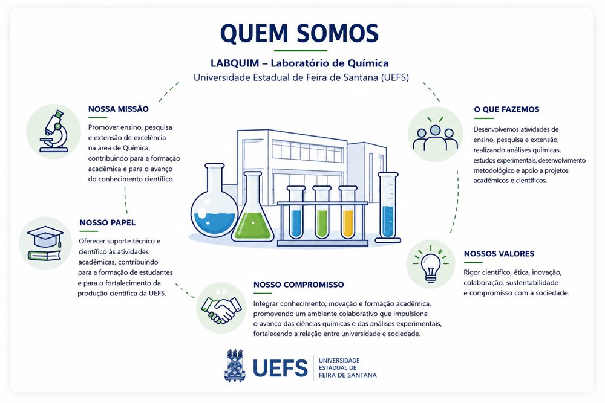

O LABQUIM – Laboratório de Química da Universidade Estadual de Feira de Santana (UEFS) é um espaço acadêmico-científico voltado ao desenvolvimento de atividades de ensino, pesquisa e extensão nas diversas áreas das ciências químicas. Inserido no contexto universitário da UEFS, o laboratório desempenha papel fundamental na formação acadêmica e profissional de estudantes de graduação e pós-graduação, oferecendo suporte técnico e científico para práticas experimentais, projetos de pesquisa e ações extensionistas.
O laboratório atua como ambiente de integração entre conhecimento teórico e prática experimental, contribuindo para o fortalecimento da produção científica, inovação tecnológica e desenvolvimento de soluções aplicadas às demandas da sociedade. Suas atividades abrangem análises químicas, desenvolvimento metodológico, estudos experimentais e apoio a pesquisas interdisciplinares, promovendo a construção de conhecimento científico com rigor e excelência acadêmica.
Comprometido com os princípios da indissociabilidade entre ensino, pesquisa e extensão, o LABQUIM busca estimular a formação crítica, científica e colaborativa de estudantes e pesquisadores, proporcionando um ambiente propício à inovação, à investigação experimental e ao avanço das ciências químicas. Além disso, o laboratório fortalece a interação entre universidade e sociedade por meio de projetos científicos, ações educativas e iniciativas voltadas à difusão do conhecimento.

Pesquisa, ensino e inovação para a ciência química
Espectrômetro FTIR, polarímetro, balança analítica, sistema ELGA de água ultrapura, rotaevaporador, leitor de microplacas, banhos termostatizados e muito mais.
Ver laboratório →O LabQuim está localizado no Módulo de Ciências Exatas da Universidade Estadual de Feira de Santana (UEFS), Bahia.
Como chegar →Conheça as linhas de pesquisa desenvolvidas por nossos professores
Produtos Naturais, Fitoquímica e Atividade Biológica in vitro
Sensores Fluorimétricos, Biocombustíveis, Quimiometria e Propriedade Intelectual
Química Analítica Ambiental, Especiação de Metais e Quimiometria
Química de Coordenação, Materiais e Remoção de Poluentes em Meio Aquoso
Química de Produtos Naturais, Fitoquímica e Gerenciamento de Resíduos Químicos
Apoio e Fomento
 FAPESB
FAPESB
Tem dúvidas ou interesse em colaborações? Envie uma mensagem.
Universidade Estadual de Feira de Santana
Av. Transnordestina, s/n — Novo Horizonte
CEP 44036-900 — Feira de Santana, BA
(75) 3161-8086
UEFS — Universidade Estadual de Feira de Santana
Módulo de Ciências Exatas
Atendimento: segunda a sexta, das 8h às 12h e das 14h às 18h.